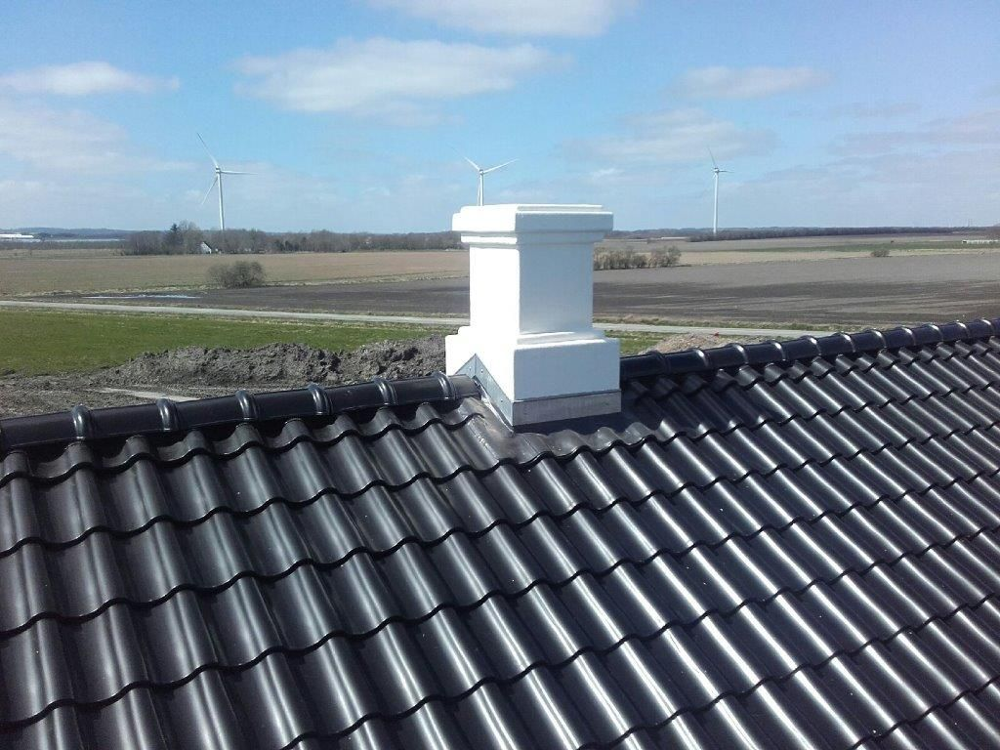

Aut. VVS-installatør · Platanvej, Herning
Fra taget til teknikrummet.
Vand, varme, luft, gas og metal. Siden 1963, for kommuner og industri i Midtjylland, og for husejeren i den anden ende af byen.

11.500m³/h, største ventilationsanlæg
4.000m², største VVS-entreprise
32navngivne referenceprojekter